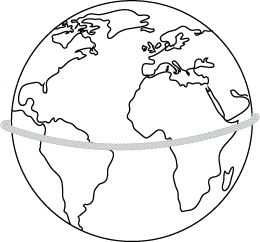
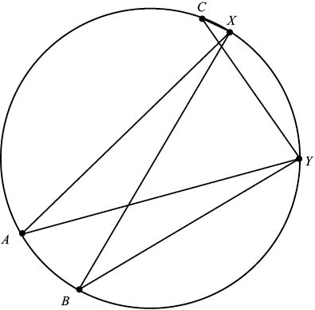
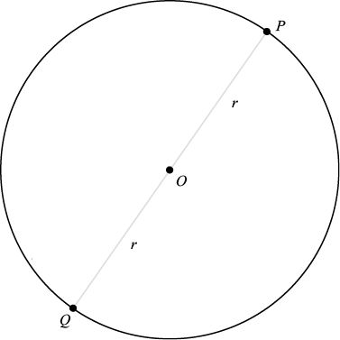

也称作半径。
也称作半径。在上一章的开头，为了测试大家在矩形及三角形等方面的几何直觉能力，我提出了4个问题，最后一个问题是用绳子连接橄榄球场两端的球门柱。本章将专门讨论圆这种几何图形，请大家拿出一条绳子，用它环绕地球一周！

问题1：假设我们有一条刚好可以绕地球一周的长绳子（约为25 000英里[1]长）。在打结时，我们把绳子的长度增加10英尺。如果要求绳子距赤道的高度全部相同，这个高度应该是多少？
A）离地面不到1英寸。
B）正好可以让人从下面爬过去。
C）正好可以让人从下面走过去。
D）足够一辆卡车从下方通过。
问题2：如下图所示，X和Y是圆上的两个固定点，Z是“优弧”（major arc，指X和Y之间的那条长弧，而不是短弧）上的一个点。要使∠XZY最小，点Z的位置如何确定？
A）点A（与X、Y的中点相对）。
B）点B（点X通过圆心的映射）。
C）点C（与点X尽可能接近）。
D）无所谓。无论点Z在什么位置上，∠XZY都相同。

要解答这两个问题，我们需要进一步了解圆的相关属性。（即使没有圆的相关知识，你也能找出这两道题的正确答案，分别是B和D。但是，要弄清楚为什么它们是正确答案，就需要对圆的知识有所了解。）如下图所示，点O和正数r就可以定义一个圆：圆上的所有点与O的距离都是r。点O是“圆心”，r是圆的“半径”。为方便起见，数学界把从点O至点P的线段也称作半径。
